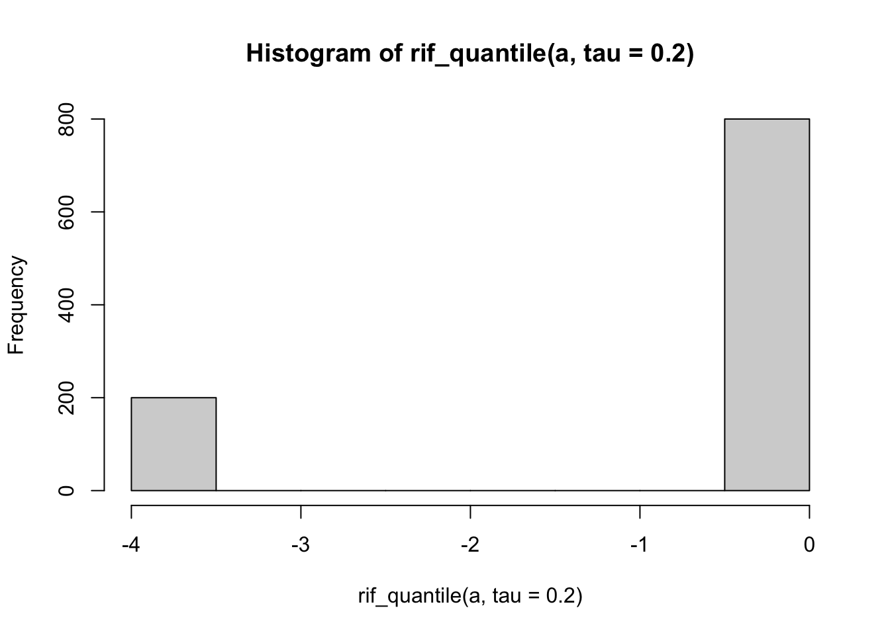

rif_quantile <- function(Y, tau = 0.5, na.rm = TRUE, bw = "nrd0") {
stopifnot(is.numeric(Y))
stopifnot(length(tau) == 1, tau > 0, tau < 1)
# Keep track of missingness
out <- rep(NA_real_, length(Y))
ok <- !is.na(Y)
Y0 <- Y[ok]
# Estimate empirical quantile
q_tau <- as.numeric(quantile(Y0, probs = tau, na.rm = na.rm, type = 7))
# Estimate density at the quantile
dens <- density(Y0, na.rm = na.rm, bw = bw)
f_q <- approx(dens$x, dens$y, xout = q_tau, rule = 2)$y
# RIF for quantile
out[ok] <- q_tau + (tau - as.numeric(Y0 <= q_tau)) / f_q
attr(out, "tau") <- tau
attr(out, "q_tau") <- q_tau
attr(out, "f_q") <- f_q
return(out)
}
a <- rnorm(1000)
hist(rif_quantile(a, tau = 0.2))